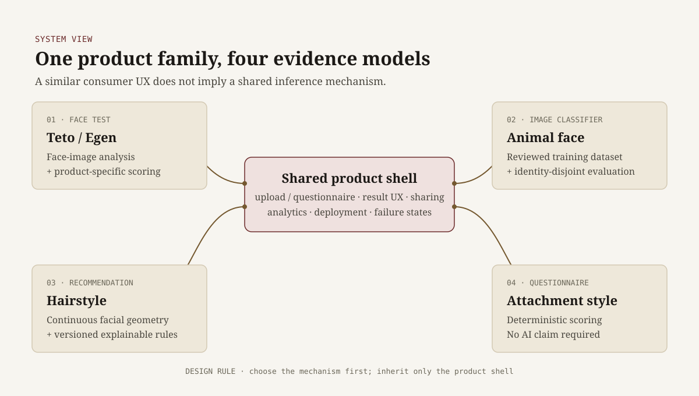
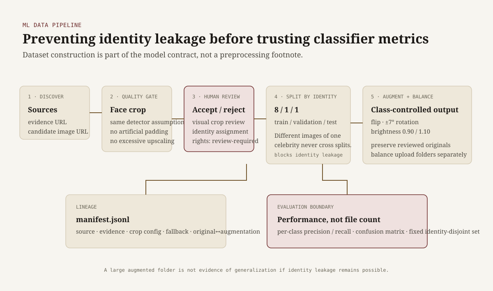
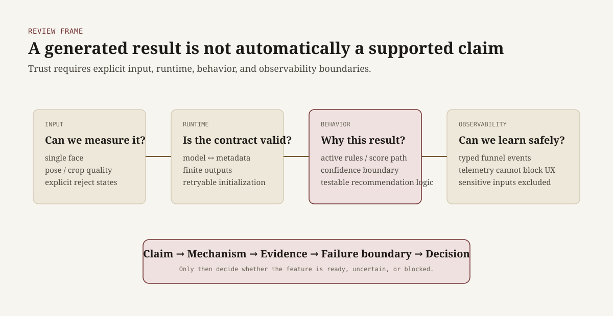

TetoEgen — Building a Multi-Vertical Product Around Explicit Evidence
A consumer product family spanning a Teto/Egen face test, an animal-face classifier, geometry-driven hairstyle recommendation, and an attachment-style questionnaire. The engineering problem was not to put the same AI behind every page, but to choose the right inference mechanism for each product and make its evidence boundary explicit.
TetoEgen began as a face-based consumer test and grew into four different product verticals sharing a common web product shell. From the outside, each experience looks similar: the user provides information and receives a personalized result. Underneath, however, the reasoning requirements are different.

Keeping these mechanisms distinct was deliberate. A superficially similar UX does not imply that the same model or the same evidence standard is appropriate for every problem.
1. Replacing categorical hairstyle logic with measurable geometry
A simple hairstyle recommender can map a label such as “round face” or “oblong face” to a fixed list of styles. I wanted the recommendation engine to depend less on a single categorical label and more on the measurements that produced that label.
The face-analysis pipeline derives signals including:
- face elongation and width relationships,
- forehead, cheek and jaw proportions,
- upper / middle / lower facial thirds,
- jaw taper and angularity,
- symmetry deviation,
- vertical and horizontal emphasis.
Before those measurements are trusted, the system evaluates pose quality. Roll can be normalized, while excessive yaw or pitch lowers confidence or causes the image to be rejected. Jaw geometry is also derived from contour segments rather than represented by one landmark: the implementation fits contour lines, evaluates candidate jaw corners, and measures how strongly the contour changes direction.
Those continuous features are translated into a target hairstyle geometry. The engine can, for example, reduce excessive crown height, increase horizontal flow, alter fringe coverage according to upper-face proportion, or add softer movement when the jaw is strongly angular. User intent — natural, soft, structured, or expressive — modifies the same target rather than being applied only as a cosmetic filter afterward.
The recommendation rules are versioned and the engine records which rules were activated. The display label remains useful to explain the result to a user, but it is not the primary selector of hairstyle families.

Design principle: preserve the readable label for UX, but let the recommendation depend on the underlying measurements that can be inspected, calibrated, and tested independently.
2. Treating the ML dataset as part of the product
For the animal-face classifier, the main risk was not whether a model could produce a probability vector. It was whether the dataset and evaluation setup made those probabilities meaningful.
I built a separate local collection and review workflow that:
- discovers candidate images and supporting sources,
- detects and crops the face using the same assumptions as the product,
- requires explicit human acceptance or rejection,
- records source and transformation lineage in a manifest,
- keeps train, validation and test splits separate by identity,
- balances classes without modifying the reviewed originals.
The identity-level split is important. If different photos of the same celebrity appear in both training and validation data, a strong metric may measure person recognition instead of generalization of the intended visual category.

The collector also rejects crops that would require artificial padding or excessive upscaling. It records whether a fallback thumbnail was used, and every collected record remains marked for rights review rather than treating public discoverability as permission to train or redistribute.
3. Designing explicit failure boundaries
Consumer AI products can appear successful when the happy path works once. I treated failure boundaries as part of the product contract instead.
- input quality is checked before face-derived measurements are trusted,
- multiple-face and low-quality inputs receive explicit failure states,
- model metadata and runtime output shape are treated as a contract,
- recommendation rules expose why a result was produced,
- analytics are isolated so telemetry failure cannot block the user flow.
I also kept high-sensitivity user inputs out of normal funnel telemetry. The goal was to collect enough evidence to understand whether the product worked without confusing observability with indiscriminate data collection.

4. What this project changed in how I review AI MVPs
The most useful outcome was a repeatable review frame that goes beyond asking whether an AI feature can produce a convincing demo:
- Claim: What exactly does the product say it can do?
- Mechanism: What actually produces the result?
- Evidence: What test would distinguish real capability from a convincing happy path?
- Failure boundary: When should the system lower confidence, reject input, or expose uncertainty?
- Decision: Which issue blocks release, and which one is merely technical debt?
What I would evaluate differently now
The project also makes several limitations clear. If I were running the evaluation from the beginning again, I would define product-specific success criteria before adding more features.
- Hairstyle: calibrate geometric thresholds and rule strengths against a labeled reference set instead of allowing hand-tuned rules to accumulate faster than evidence.
- Animal-face: maintain a fixed, identity-disjoint offline evaluation set and report per-class precision / recall and confusion matrices before interpreting model confidence as product quality.
- Consumer perception: separate entertainment value, perceived plausibility, and predictive correctness as different metrics.
- Cross-vertical product decisions: require each new vertical to justify its own inference method and measurement plan instead of inheriting the evaluation assumptions of the original product.
Outcome
TetoEgen became a deployed multi-vertical consumer product rather than a single model demo. The project spans computer-vision preprocessing, reviewed ML data collection, explainable recommendation logic, typed product analytics, and production web engineering.
More importantly, it gave me a practical distinction I now use when reviewing early AI products: a feature that generates an output is not the same thing as a feature whose claim is supported by evidence.
Stack: Next.js, TypeScript, TensorFlow.js, MediaPipe, face-api.js, Playwright, GA4, Cloudflare Pages
Production:
tetoegen.kr
Source: Private repository